{kind=link}
{kind=link}

| Divers | The boat "Running Free II" |
|---|---|
| The boat and boat crew were organized through ProDive Townsville. Check out the boat's dive deck and down stairs quarters. |
| Dive crew | |
| |
| Boat crew | |
|
| The crew ... Luis, Geoff, Damien | 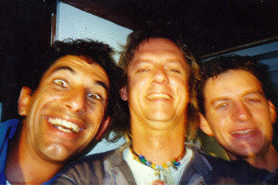 |
| Rob's best anenome photo (he took several!) at Wheeler Reef. | 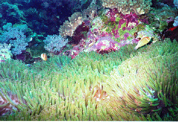 |
| Coral at Wheeler Reef. | 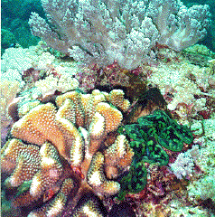 |
| A puffer fish at Wheeler Reef. | 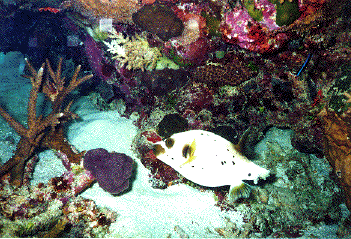 |
| Joy, Nicole, Brett, Ben, and Jason enjoying the sun on the foredeck after a dive. Skipper Luis looking round the corner. | 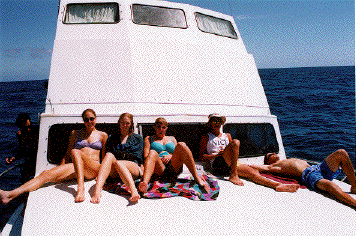 |
| The roof was a good place to hide between dives. Rieman, Lars, Rob, Phil. | 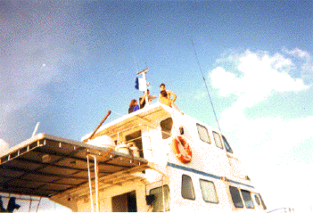 |
| Melissa looking up the ladder to the top deck. | 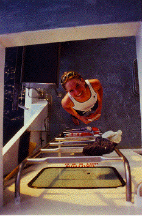 |
| The fastest way to get Rieman into her wetsuit. | 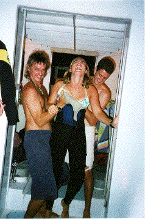 |
| More coral at Wheeler Reef. | 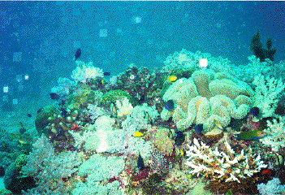 |
| Rob's personal collection of sea slugs at Wheeler Reef. | 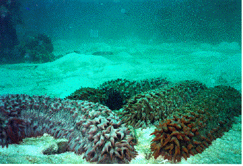 |
| Looking from the helm, through the eating area, to the dive deck. Lars putting on his weight belt, Nicole facing away, and Rieman sitting. | 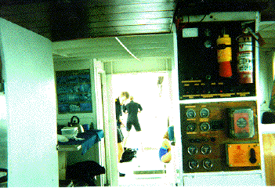 |
| Damien in his rightful place, scrubbing potatoes for dinner. | 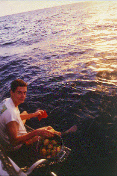 |
| Tammy (not puking) and Jason at Davies Coral Gardens. | 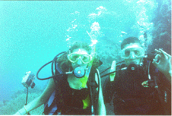 |
| Staghorn corals at Davies Coral Gardens. |
|
| Divers suiting up for a night dive: The back of Melissa's head, Brett, unknown body bending over, Lex and Nicole ready to go, Rieman in Stephanie's wetsuit, and Jason. | 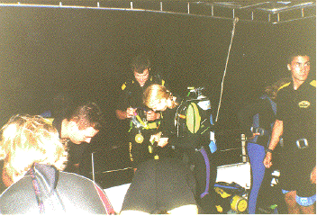 |
| Inspiration needed for working out dive tables after a night dive. | 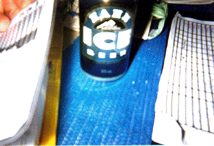 |
| This is what nitrogen did to Melissa. | 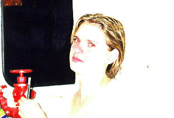 |
| Arriving at Broadhurst Reef | 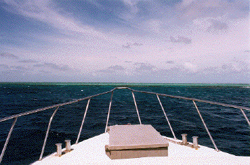 |
| The boys being cool ... Lex, Brett, Jason, and Lars on the roof (looking for more Swedish things). | 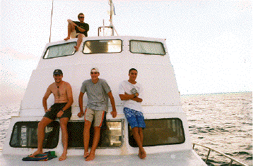 |
| Joy, Lex, and Melissa in the foreground, waiting for the sun to set. | 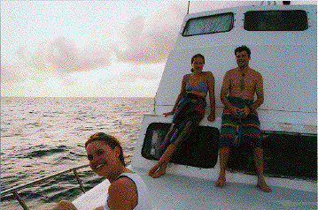 |
| Rieman peering over the Yongala. | 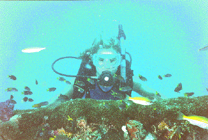 |
| Everyone on the foredeck between dives at the Yongala. From left to right leaning against the windows: Joy, Brett, Lex, Melissa, Brett, Jason. Lying on the deck: Lars, Rieman, Phil, Nicole, Jakob. Geoff standing with the dive roster. | 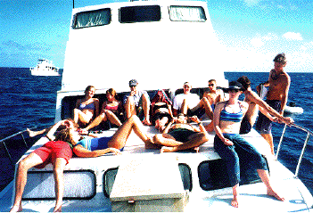 |
| Running Free II, from the water at Yongala. | 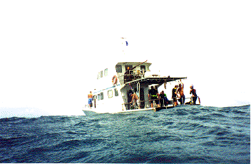 |
| Nicole, Lex and Joy on the starboard rail. | 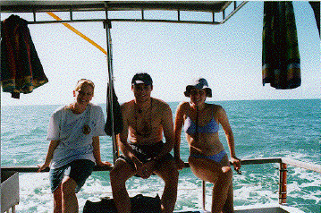 |
| On the way home, with Cape Cleveland in the background. Melissa, Joy, Rieman, Rob kneeling, Jason, and Lex. | 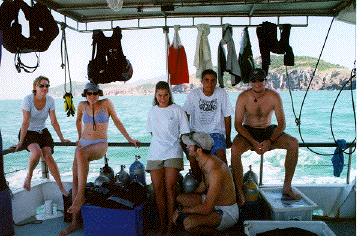 |
| Rob, Rieman, Phil, and Ben. On the way into Cleveland Bay, with the lighthouse in the background. | 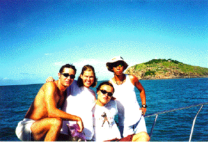 |